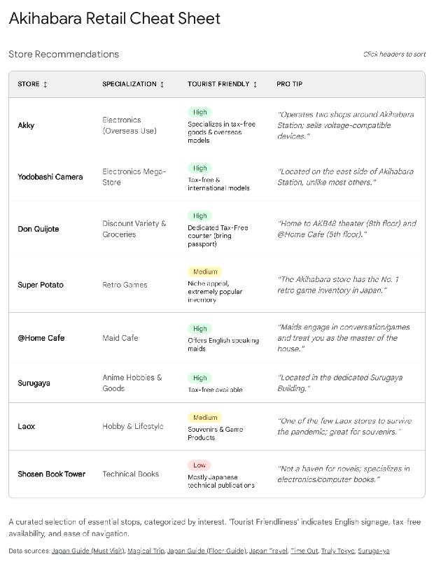

Akihabara Shopping Guide
Quick Suggestions
Curated list of spots in Akihabara.
| Location | Description |
|---|---|
| Breakfast/Brunch: The French Toast Factory Google Maps | Renowned for soufflé pancakes. Located on the 8th floor of Yodobashi Akiba. Opens at 11:00 AM. |
| Breakfast/Brunch: Flying Scotsman Google Maps | Famous for thick, dense hotcakes. Opens 11:00 AM weekdays, 10:00 AM weekends. |
| Early Morning: Coffee Renoir (Showa-dori Exit) Google Maps | Traditional Japanese coffee house ('Kissaten') with comfortable velvet seats. Opens 7:30 AM. |
| Early Morning: Beck's Coffee Shop Google Maps | Quick, functional morning plates. Located at the Electric Town Gate. Opens 6:30 AM. |
| Electronics: Yodobashi Akiba Google Maps | Massive 9-story electronics complex. A theme park for consumerism. Opens 9:30 AM. |
| Electronics Components: Akihabara Radio Center Google Maps | Two-story warren of tiny stalls selling electronic components. Authentic cyberpunk bazaar atmosphere. |
| Anime/Figures: Radio Kaikan Google Maps | 10-story tower serving as a 'Vertical High Street' for otaku culture. Figures, cards, models. |
| Vintage/Rare: Mandarake Complex Google Maps | The gold standard for vintage and rare collectibles. 8 floors of manga, toys, and cells. |
| Retro Games: Super Potato Google Maps | Famous retro game store with a 5th-floor arcade. A nostalgia overload. |
| Souvenirs/Night: Don Quijote Akihabara Google Maps | Open 24 hours. Mass-market souvenirs, KitKats, cosmetics. Houses the AKB48 Theater. |
Akihabara Shopping Background Reading
The Electric Town Retail Ecosystem: An Exhaustive Strategic Analysis of Akihabara for the US Traveler
1\. Executive Summary: The Cultural and Economic Metamorphosis of Akihabara
Akihabara, known globally by its affectionate contraction "Akiba," represents a unique retail ecosystem that defies the conventional categorization of a shopping district. Situated in the Chiyoda ward of Tokyo, it functions less like a standard commercial zone and more like a specialized city-state with its own temporal rhythms, cultural codes, and economic logic.1 For the United States tourist, Akihabara presents a sensory and logistical paradox: it is simultaneously a hyper-modern neon wonderland of cutting-edge technology and a nostalgic, dusty repository of analog history. It is a place where the newest high-resolution computer components are sold mere meters away from vacuum tubes manufactured in the 1960s, and where the latest anime franchises coexist with vintage video games from the 1980s.2
Historically, this district emerged from the chaotic post-war black markets near the railway tracks, consolidating into a hub for radio components and household electronics—hence the enduring moniker "Electric Town" (*Denki Gai*).3 The district served as the engine room for Japan's rapid modernization, supplying the washing machines, refrigerators, and color televisions that defined the post-war economic miracle. However, over the last two decades, Akihabara has undergone a radical metamorphosis. While the electronic roots remain visibly embedded in the cramped, specialized stalls of the Radio Center and the sprawling floors of Yodobashi Camera, the dominant flora of this ecosystem has shifted decisively toward "Otaku" culture.3 This term encompasses a broad spectrum of subcultural interests including anime, manga, video games, cosplay, idol culture, and model building.
Today, Akihabara is the global epicenter of this subculture, a "holy land" that attracts millions of pilgrims annually.1 Yet, for the uninitiated visitor, particularly one coming from the United States, the district can be impenetrable. The retail landscape is bifurcated between sanitized, vertical mega-malls that offer a user-friendly, if sterile, experience, and labyrinthine, specialized alleyway shops that require specific knowledge to navigate. The operational hours are often counter-intuitive to American norms, creating logistical hurdles for those attempting to maximize their travel itineraries.4 Furthermore, the nuances of tax-free shopping, region-locking of media, and voltage compatibility of electronics add layers of complexity to every purchase decision.6
This report serves as an exhaustive operational guide for navigating this complex terrain. It moves beyond superficial "top 10" lists to provide a strategic analysis of the district’s retail landscape in 2024 and 2025\. The analysis draws upon a synthesis of current on-the-ground data, pricing trends in the retro gaming market, and the logistical realities of post-pandemic travel in Tokyo. It charts a path for the discerning US traveler who seeks not just to visit Akihabara, but to efficiently extract value from it—whether that value takes the form of a rare 1990s PC-9801 computer, a custom mechanical keyboard, a vintage vinyl figure, or simply the fluffiest soufflé pancakes in the ward.
2\. Strategic Logistics and Operational Framework
Before descending into the specific retail verticals, it is imperative to establish the logistical framework that governs shopping in Akihabara. The district operates on a schedule and under a set of rules that are distinct from other major Tokyo districts like Shibuya or Shinjuku. Understanding these nuances is the critical differentiator between a wasted morning of frustration and a productive, high-yield expedition.
2.1 The "Morning Gap" Phenomenon
One of the most jarring realizations for early-rising US tourists, often battling significant jet lag, is Akihabara’s late operational start. In major Western metropolises like New York or London, commerce typically begins by 9:00 AM. In contrast, Akihabara is notoriously dormant in the morning hours, a phenomenon this report identifies as the "Morning Gap".4
2.1.1 The Operational Schedule
The district's retail timeline can be categorized into three distinct phases:
- The Dormant Phase (6:00 AM – 9:30 AM): During this window, the streets are largely empty of retail activity. The iconic hobby shops, figure stores, and retro game centers are firmly shuttered. Only a select few chain cafes, convenience stores, and hotel breakfast buffets are operational.
- The Awakening Phase (9:30 AM – 11:00 AM): This is a staggered opening period. The massive Yodobashi Akiba complex opens its doors at 9:30 AM, serving as the primary refuge for tourists during this window.6 However, most other specialized retail remains closed.
- The Active Phase (11:00 AM – 8:00 PM): The vast majority of hobby shops, including Radio Kaikan, Mandarake, and Super Potato, do not open until 11:00 AM or even 12:00 PM.7 The district reaches peak activity levels between 1:00 PM and 6:00 PM.
2.1.2 Implications for the US Tourist
A tourist arriving at 9:00 AM expecting to shop for anime figures or retro games will find themselves facing closed gates and shuttered storefronts. This misalignment of schedules is a frequent source of frustration. The strategic traveler must utilize the "Morning Gap" for dining or exploration of 24-hour establishments like Don Quijote (which has some floors open) or specific early-opening cafes, rather than attempting to engage in hobby shopping. The subsequent sections of this report will provide a detailed "Morning Survival Strategy" to mitigate this issue.
2.2 The Tax-Free Advantage and Economic Incentives
For US tourists, the current economic environment offers a significant purchasing advantage. The strength of the US Dollar against the Japanese Yen (JPY), combined with Japan's consumption tax exemption scheme, creates a highly favorable landscape for acquiring electronics and collectibles.
2.2.1 Eligibility and Thresholds
Visitors entering Japan on a "Temporary Visitor" entry stamp—which covers standard tourist stays of up to 90 days—are eligible for an exemption from the 10% consumption tax.8 This exemption is not automatic; it must be requested and processed at the point of sale or a designated tax-free counter.
- The ¥5,000 Threshold: To qualify for tax-free shopping, the total purchase amount at a single store on a single day must exceed ¥5,000 (excluding tax). This equates to approximately $35-$45 USD depending on exchange rates.8
- Categories of Goods:
- *General Goods:* This category includes electronics, clothes, bags, watches, and toys (figures). These items can be used immediately while in Japan, provided they are taken out of the country within six months.8
- *Consumables:* This category includes food (such as KitKats), beverages, cosmetics, and pharmaceuticals. These items are subject to stricter rules. They must be sealed in a special clear, tamper-evident plastic bag by the retailer. The tourist is strictly prohibited from opening this bag until they have left Japan.8
2.2.2 Procedural Requirements
A physical passport is mandatory for tax-free processing. Photocopies or photos on a smartphone are rarely accepted by Japanese retailers, who are bound by strict legal requirements to scan the entry permit.8 At major department stores like Yodobashi Camera or Mandarake, dedicated tax-free counters are staffed by multilingual personnel to expedite this process.6 However, smaller stalls in the Radio Center or independent retro game shops often operate on a cash-only basis and may not offer tax-free services, or may include the tax in the display price. It is crucial to look for the "Japan Tax-Free Shop" logo at the entrance.
2.3 Technical Compatibility: Voltage and Region Locking
Buying electronics in Akihabara requires a nuanced understanding of technical compatibility. US tourists must navigate differences in voltage, frequency, and digital rights management (region locking) to ensure their purchases function correctly upon returning home.
2.3.1 Voltage and Power
- The Voltage Difference: Japan operates on a 100V electrical standard, whereas the United States uses 120V.6 While the plugs (Type A, two flat pins) are physically identical, the voltage difference can be significant for certain appliances.
- *High-Heat Appliances:* Devices that generate heat, such as hair dryers, rice cookers, and toilet seats (*washlets*), are sensitive to voltage. Plugging a 100V Japanese hair dryer into a 120V US outlet can cause it to overheat, burn out, or even catch fire. For these items, tourists must seek out "Overseas Models" or "Tourist Models" specifically designed for 120V/220V, which are often sold in dedicated sections of stores like Yodobashi Akiba.6
- *Electronics:* Most modern electronics (laptops, cameras, phone chargers) utilize switching power supplies that handle 100V-240V automatically. These are generally safe to use in the US without a transformer.
- Frequency: Japan is divided into two frequency zones: 50Hz in the east (Tokyo/Akihabara) and 60Hz in the west (Osaka). Most modern devices are dual-frequency (50/60Hz), but vintage electronics or clocks may be affected if they rely on line frequency for timing.
2.3.2 Region Codes and Media
- Blu-ray Discs: A major advantage for anime collectors is that Japan and the United States share the same Blu-ray region code (Region A). This means Japanese anime Blu-rays will play perfectly on US players, often without the need for modification, although they may lack English subtitles.11
- DVDs: Conversely, DVDs are incompatible. Japan is Region 2, while the US is Region 1\.6 A standard US DVD player will not play Japanese discs.
- Video Game Consoles:
- *Modern Consoles:* The Nintendo Switch, PlayStation 4, and PlayStation 5 are region-free. US gamers can buy Japanese physical copies of games and play them on their domestic consoles.3
- *Retro Consoles:* Older systems are strictly region-locked. The Nintendo 3DS, Wii, Wii U, GameCube, Nintendo 64, Super Nintendo (Super Famicom), and NES (Famicom) all have physical or software locks. To play Japanese retro games, a tourist generally needs to purchase the Japanese hardware console as well, or invest in modding services.12
3\. The "Morning Survival" Strategy: Breakfast and Early Hours
Given the "Morning Gap" identified in Section 2.1, the first phase of any optimized Akihabara itinerary must focus on sustenance. The district offers two distinct breakfast typologies that cater to different tourist needs: the "Western/Fluffy" experience that dominates social media, and the "Traditional/Efficient" Japanese morning that fuels the local workforce.
3.1 The Fluffy Pancake Pilgrimage
The Japanese "soufflé pancake"—impossibly tall, jiggly, and airy—has become a bucket-list item for many Western tourists. Akihabara hosts destinations for this culinary experience, though access requires strategic timing.
3.1.1 The French Toast Factory
Located on the 8th floor of the Yodobashi Akiba complex, The French Toast Factory is a primary destination for sweet breakfasts.13
- The Experience: Despite the name, the establishment is renowned for its pancakes. The batter is meringue-heavy, creating a texture akin to eating a "sweet cloud".15 Popular menu items include the "Strawberry Honwaka Snow Pancake," topped with smooth honey whipped cream and fresh lemon.
- Operational Reality: Crucially, this restaurant opens at 11:00 AM.13 It does not serve early breakfast. It falls strictly into the "Brunch" category.
- Strategy: The strategic tourist should arrive at Yodobashi Akiba when the main building opens at 9:30 AM to browse the electronics floors, then head to the 8th-floor restaurant zone by 10:45 AM to queue for the opening. Wait times on weekends can easily exceed 60 minutes for those who arrive later.16
3.1.2 Flying Scotsman
Another key player in the pancake scene is Flying Scotsman, located a short walk from the station.17
- Profile: This cafe is famous for its thick, dense hotcakes, distinct from the airy soufflé style. It offers a more rustic, substantial pancake experience.
- Hours: It opens at 11:00 AM on weekdays and 10:00 AM/10:30 AM on weekends.18 Like The French Toast Factory, this is a mid-morning or brunch option rather than an early-morning solution.
3.2 The Early Risers: Pre-10:00 AM Options
For the traveler awake at 7:00 AM due to jet lag, the options are more utilitarian but culturally rich. These venues provide a window into the daily life of Tokyo's salarymen and residents.
3.2.1 The "Kissaten" Morning Service
A *Kissaten* is a traditional Japanese coffee house, often characterized by Showa-era décor, smoking sections (though increasingly segregated or banned), and a quiet atmosphere. They offer "Morning Service" (or "Morning Set")—usually a thick slice of buttered toast and a boiled egg included for free or for a nominal fee with the purchase of a coffee.20
- Coffee Renoir (Showa-dori Exit):
- The Venue: Coffee Renoir is a ubiquitous chain that epitomizes the "Old Tokyo" vibe. It features comfortable velvet seats, attentive service, and hot towels (*oshibori*) provided upon seating.22
- Hours: The Akihabara Showa-dori branch opens at 7:30 AM.22
- The Appeal: It is a quiet sanctuary where one can plan the day's itinerary in peace. The "Morning Set" typically includes a drink, toast, egg, and soup for a reasonable price. It is an excellent spot to escape the sensory overload of the street.23
- Beck's Coffee Shop:
- Location: Located directly at the Electric Town Gate of JR Akihabara Station.24
- Offerings: Beck's offers quick, functional morning plates. A typical set might include buttered toast, a mini salad, and yogurt with granola for under ¥700.25
- Hours: Opens at 6:30 AM.24 This is one of the earliest options available, ideal for travelers who need a quick caffeine fix before catching a train or starting a very early day.
3.2.2 Traditional Japanese Breakfast
For those seeking a savory start involving rice and miso soup, Akihabara offers several authentic options.
- Yomoda Soba:
- Profile: This is a *Tachigui* (standing-style) soba shop, favored by busy office workers. It is famous for a unique and somewhat incongruous combination: Soba noodles and authentic Indian curry.26
- Hours: Opens at 7:00 AM.26
- The Experience: It offers a visceral, fast-paced experience. The "Yomoda Curry" is surprisingly spicy and complex, a cult favorite among locals. Eating here is a way to participate in the rapid rhythm of Tokyo's workforce.
- Family Restaurants ("Famiresu"):
- Jonathan's: Located near Akihabara Station, this branch offers a breakfast buffet starting from 6:00 AM or 6:30 AM.28 For a flat fee (around ¥1,500), diners can access an all-you-can-eat spread of Japanese and Western items, including grilled fish, rice, miso soup, scrambled eggs, and sausages. It also features a "Drink Bar" with unlimited soft drinks and coffee.
- Denny's Akihabara: Distinct from its US counterpart, the Japanese Denny's offers a refined menu. It serves traditional Japanese sets (grilled salmon, rice, miso soup, natto) alongside standard pancakes.30 It opens early (often 7:00 AM) and provides a comfortable seating environment with table service.
- Royal Host: Another high-end family restaurant chain. The Akihabara location (often attached to hotels like the Richmond or Remm) offers a high-quality breakfast buffet featuring both Japanese and Western dishes.31
3.2.3 The Hotel Buffet Option
- Bonsalute Cafe (Akihabara Washington Hotel):
- The Draw: This restaurant is renowned for its high-quality breakfast buffet. A standout feature is the DIY seafood bowl (*Kaisendon*) station, where guests can pile fresh sashimi (tuna, salmon, roe) onto rice.1
- Access: The buffet is open to non-guests, making it a hidden gem for tourists seeking a luxurious breakfast.
- Pricing: Prices have recently increased to approximately ¥1,980 for adults.32
- Hours: 6:30 AM – 10:00 AM. It is crucial to arrive before 9:00 AM to ensure ample time to eat before the buffet closes.
4\. The Titans of Tech: Electronics, Gadgets, and Maker Culture
Akihabara’s identity was forged in vacuum tubes, transistors, and copper wire. While anime and manga now dominate the billboards and facades, the district remains a global powerhouse for electronics. For the US tourist, the shopping experience here generally bifurcates into two distinct categories: the massive, all-encompassing Mega-Malls like Yodobashi Akiba, and the gritty, hyper-specialized Stalls of the Radio Center.
4.1 Yodobashi Akiba: The Cathedral of Commerce
Location: East side of Akihabara Station (Showa-dori Exit).
Hours: 9:30 AM – 10:00 PM.34
Yodobashi Camera Multimedia Akiba is arguably the largest electronics store in the world. It is a nine-story monolith that demands at least two to three hours of exploration for any serious tech enthusiast. It functions more like a theme park for consumerism than a simple retail store, greeting visitors with its relentless, looping jingle.
4.1.1 Floor-by-Floor Highlights
- Floor 1 (Mobile & PC): This floor is an endless sea of smartphones, laptops, and peripherals.
- *Insight for US Tourists:* Buying a laptop in Japan is generally discouraged for casual users because the keyboards utilize the JIS layout (with specific keys for Japanese input and a smaller spacebar). However, the Apple Store section within Yodobashi often stocks US-keyboard models or allows for customization.35
- *Accessories:* This is an excellent place to find high-quality peripherals that are rare in the US, such as high-end trackballs (Elecom) and unique USB cables.
- Floor 2 (PC Parts & Software): A haven for PC builders. The selection of cases, cooling fans, and GPUs is exhaustive.
- Floor 3 (Cameras): A playground for photographers. All major Japanese brands (Canon, Nikon, Sony, Fujifilm, Panasonic) have massive booths where customers can test bodies and lenses worth thousands of dollars on their own.6
- *Caveat:* Be careful when buying camera bodies. Some domestic models (especially Sony) are strictly locked to the Japanese language menu. Always verify with staff if the "International" or "Overseas" language option includes English.
- Floor 6 (Hobby & Games): This is a critical stop for the otaku tourist. It features a massive section for Gundam plastic models (Gunpla), video games, and a staggering aisle of Gachapon (capsule toy) machines.36 It is often less crowded and easier to navigate than dedicated hobby shops like Animate, making it a great "one-stop shop" for families.
- Souvenirs & Lifestyle: Yodobashi also houses a dedicated "Tourist Corner" offering export-model rice cookers (120V compatible) and high-end Toto washlets designed for overseas plumbing voltages.10 These are popular big-ticket souvenirs.
4.1.2 The Point Card vs. Tax-Free Dilemma
Yodobashi operates a famous "Gold Point" system, typically giving 10% of the purchase price back as points for future use. However, tourists using the Tax-Free exemption (10%) usually cannot earn points simultaneously.8 The discount is generally mathematically equivalent, but the Tax-Free deduction is immediate cash savings, whereas points require a future purchase. For most short-term visitors, the Tax-Free option is superior.
4.2 The Roots: Akihabara Radio Center & Radio Department Store
If Yodobashi is the polished future, the Akihabara Radio Center (*Radio Center*) and the adjacent Tokyo Radio Department Store (*Tokyo Radio Depart*) are the gritty, authentic past. Located directly under the JR Sobu Line tracks near the Electric Town Exit, these are two-story warrens of tiny stalls.37
- The Atmosphere: Walking through these corridors feels like entering a cyberpunk bazaar. The air smells faintly of solder, dust, and ozone. The stalls are often no wider than a doorway, packed floor-to-ceiling with components.
- The Inventory: These stalls sell the fundamental building blocks of electronics: capacitors, LEDs, switches, vacuum tubes, connectors, and measuring equipment.
- For the Tourist: Even for those who are not electrical engineers, the Radio Center is a visual spectacle. It is one of the few places in Tokyo that retains the chaotic, densely packed atmosphere of the post-war black markets. It is a living museum of the "Maker" spirit.39
- Sengoku Densho: Located nearby, this is a slightly more organized shop for cables and DIY parts. It is a go-to for "makers" looking for Raspberry Pi accessories, breadboards, and obscure connectors that are difficult to find in US big-box stores.40
4.3 The Niche Specialist: Yusha Kobo
For a truly unique shopping opportunity that reflects modern trends, Yusha Kobo stands out.41 It is a specialty shop dedicated entirely to the hobby of custom mechanical keyboards.
- The Appeal: In the United States, the custom keyboard hobby is largely conducted online via Group Buys and waitlists. Yusha Kobo offers a tangible, physical experience. Visitors can touch and test hundreds of different mechanical switches (tactile, linear, clicky), inspect keycap sets in person, and view high-end artisan keycaps.
- The "Maker" Space: The shop even offers a workspace where customers can rent soldering irons and tools to assemble their keyboards in the store.
- Why Visit: It represents the new wave of Akiba culture—moving away from passive consumption (buying anime goods) to active creation. It is a "Must" for any PC gamer or typist.
5\. The Otaku Pilgrimage: Figures, Anime, and Manga
For the anime enthusiast, Akihabara is a pilgrimage site of global significance. However, the sheer volume of shops can be paralyzing. The market is broadly divided into "New Goods" (sold at retail price) and "Second-Hand/Pre-Owned" (sold at market price, which fluctuates based on rarity and condition).
5.1 Vertical Retail: The Radio Kaikan Ecosystem
Directly opposite the Electric Town South Exit stands the Radio Kaikan building. Rebuilt in 2014, it is no longer the grungy parts market of the past but a gleaming 10-story tower that serves as a "Vertical High Street" for otaku culture.6 It is the single most efficient stop for a time-constrained tourist, as it concentrates the entire Akihabara experience into one building.
The building is organized hierarchically, allowing visitors to target their specific interests floor by floor:
- Floor 1 (Gifts & Convenience): The ground floor features a convenience store and gift shops selling mass-market souvenir snacks (like Akihabara-branded cookies) and small trinkets. It serves as the gateway.
- Floor 2 (Rental Showcases): This floor hosts "Rental Showcase" stores (like ASTOP). Here, individual collectors rent small glass cubes to sell their own items. It is a flea market in glass boxes—prices vary wildly, and treasures can be found if one has the patience to scan hundreds of shelves.43
- Floors 3-4 (Figures & Merchandise): These floors are dominated by major retailers like K-Books and AmiAmi.
- *AmiAmi:* This is the king of figures. They stock a massive selection of high-quality scale figures from manufacturers like Alter, Good Smile Company, and Kotobukiya. They sell both new items and "Grade A/B" pre-owned figures.44 In Japan, "pre-owned" often means "box opened, figure untouched," offering significant discounts for items that are virtually mint.
- Floor 5 (Card Games & Idols): This level focuses on trading card games (TCG) like Yu-Gi-Oh\!, Pokémon, and Magic: The Gathering. It also houses shops dedicated to "Idol" merchandise (photos and goods of real-life J-Pop stars).
- Floor 6 (Hobby & Military): Yellow Submarine occupies this space. It is a haven for tabletop RPGs, board games, and detailed military scale models (tanks, planes, ships).45
- Floors 7-8 (Specialized Hobbies): These upper floors cater to deeper niches, including Dolls Point (high-end ball-jointed dolls/BJD) and shops selling railway models and vintage toys. The atmosphere here is quieter and more focused.
5.2 Mandarake Complex: The Black Monolith
Location: 3-11-12 Sotokanda.46
Hours: 12:00 PM – 8:00 PM.
Mandarake Complex is the gold standard for vintage and rare collectibles. The building itself is an imposing black tower that feels like a fortress of solitude for geeks.9 Unlike Radio Kaikan, which feels like a mall, Mandarake feels like a museum where everything is for sale.
- Inventory: The store spans 8 floors, each dedicated to a specific category.
- *Vintage Manga:* You can find original *Shonen Jump* magazines from the 1980s or rare first editions.
- *Cells & Scripts:* They sell actual production cells and recording scripts from 90s anime, a holy grail for serious collectors.
- *Vintage Toys:* Antique tin toys, ultra-rare Godzilla vinyls (*Sofubi*), and Transformers from the 1980s.
- Pricing: Mandarake is expert and knowledgeable. You will generally not find "steals" here in the sense of underpriced items; the staff knows exactly what they have. However, you will find items you simply cannot find anywhere else on earth. The prices represent fair market value for the rarity.
- Shopping Tip: The most efficient strategy is to take the elevator to the top floor (Floor 8\) and walk down the stairwells. The stairwells themselves are decorated with eerie, fascinating displays and merchandising, contributing to the store's unique atmosphere.
5.3 Surugaya: The Treasure Hunter's Choice
Surugaya operates multiple specialty stores in Akihabara (Game Museum, Anime Hobby Pavilion, etc.).47
- The Vibe: Chaotic, cluttered, and cheap. Unlike the curated, pristine shelves of Mandarake, Surugaya often feels like a rummage sale or a warehouse.
- The Insight: This is where the deals are. Their "Junk" bins are legendary among locals and savvy tourists. "Junk" in Japan does not necessarily mean broken; it often means "item is loose (no box)," "has a minor scratch," or "untested." You might find a figure that sells for ¥5,000 at Mandarake sitting in a bin for ¥500 because it is missing its original cardboard box.
- Strategy: Shopping at Surugaya requires patience. You must be willing to dig. But for the budget-conscious collector or the treasure hunter, it offers a thrill that the more sanitized shops cannot match.
5.4 Animate and Gamers: The Mass Market
- Animate: This is the mass-market leader.11 It focuses heavily on *current* popular anime (e.g., Demon Slayer, Jujutsu Kaisen, Spy x Family). The merchandise here is primarily "character goods"—clear files, keychains, acrylic stands, and stationery. It is less about expensive scale figures and more about affordable, portable merch. It is the best place to buy gifts for younger fans.
- Gamers: Similar to Animate, but with a heavier slant towards *Voice Actors* (*Seiyuu*) and *Idol* franchises (e.g., Love Live\!, Idolmaster).6 If a tourist is interested in the music/idol side of anime culture, Gamers is the essential stop.
6\. The Retro Gaming Sanctuary
Japan's preservation of video game history is unmatched. For US tourists who grew up in the 80s and 90s, buying retro games (Famicom, Super Famicom, Game Boy) is often a primary objective of their trip. Akihabara offers a density of retro game shops found nowhere else.
6.1 Super Potato: The Tourist Flagship
Super Potato 49 is arguably the most famous retro game store in the world.
- Atmosphere: It is undeniably cool. The entrance is a narrow, sticker-bombed staircase that sets the tone. Inside, the shop plays chiptune music and is decorated with giant Mario statues and pixel art. The 5th floor is a "Retro Arcade" featuring vintage cabinets (Street Fighter II, Pac-Man) and a "Dagashi" (penny candy) corner.51 It is a nostalgia overload.
- The Verdict: Go for the experience, be cautious with the wallet. Super Potato is well aware of its status as a tourist destination. Consequently, their prices on popular items (Pokémon, Zelda, Mario, Metroid) are often significantly higher than other shops in the area.52
- Must-Do: Visit the store to soak in the atmosphere. Play a game in the 5th-floor arcade. Sit on the throne made of game cartridges for a photo. Buy a small souvenir like a keychain or T-shirt. But save your big hardware purchases for elsewhere unless you prioritize convenience over cost.
6.2 The Alternatives: Where to Actually Buy
If the goal is to acquire games and hardware at fair prices, other shops often offer better value.
- Retro Game Camp: Located on the main street (Chuo-dori).53
- The Value Proposition: This shop is famous for a specific service: they replace the internal save batteries in their Game Boy and SNES cartridges. Old games rely on a CR2032 battery to hold save files; after 20+ years, most are dead. Retro Game Camp verifies and replaces these, ensuring your save file will actually hold. For a player (as opposed to a sealed-box collector), this adds immense value.
- Inventory: They have a dense selection of Nintendo and Sega hardware.
- BEEP: Located underground, away from the main drag.55
- The Niche: This is for the hardcore enthusiast. BEEP specializes in Japanese Retro PCs—systems like the NEC PC-98, Sharp X68000, and MSX. These computers never left Japan and host a unique library of games that defined the "Galapagos" era of Japanese computing.
- Why Visit: You won't find Mario here; you'll find obscure shoot-'em-ups (*shmups*) and the origins of the visual novel genre. It is a fascinating, museum-like look at an alternate history of computing.
- Trader: A chain with multiple stores in Akihabara. "Trader 2" is particularly excellent for retro games.55 The organization is clean, efficient, and the prices are generally lower than Super Potato. It feels more like a shop and less like a tourist attraction.

7\. Hobbyist Havens: Beyond the Screen
Akihabara caters to obsessions that extend beyond screens and plastic figures. For those with specific, tactile hobbies, the district offers resources that are difficult to find anywhere else in the world.
7.1 Shosen Book Tower: The Print Cathedral
Location: Near Akihabara Station Showa-dori Exit.57
While physical bookstores are in decline globally, Shosen Book Tower thrives by hyper-specializing. It is a 9-story tower dedicated entirely to hobbyist literature.
- The Inventory: The shop categorizes floors by intense subcultures:
- *Railways (Densha Otaku):* Entire floors are devoted to trains—technical manuals, timetables, photography books, and railway merchandise.59
- *Idols:* Extensive collections of photobooks featuring J-Pop stars and gravure idols.
- *Martial Arts & Pro Wrestling:* A surprisingly deep selection of wrestling masks, biographies, and technique books.
- *Military:* Detailed diagrams, history books, and visual guides to tanks, planes, and warships.
- For the US Tourist: Even if one cannot read Japanese, the "Mook" (Magazine-Book) culture in Japan is highly visual. High-quality art books, technical guides with detailed schematics, and historical photo archives make for incredible, unique souvenirs that transcend the language barrier.
7.2 Mak Japan & Arcade Parts
For the Fighting Game Community (FGC) and arcade enthusiasts, Mak Japan is a legendary destination.60
- The Niche: This shop specializes in genuine arcade parts—the actual components used in arcade cabinets. They sell Sanwa and Seimitsu buttons, joysticks, ball tops, springs, and microswitches.
- The Opportunity: Visitors can purchase parts to customize their home arcade sticks (FightSticks). The selection of colors and types is far vast compared to what is typically available online in the US. It is a small, specialized shop that feels like an insider's club for the dedicated gamer.
7.3 Maid Cafes: A Cultural Phenomenon
While often dismissed as tourist traps, Maid Cafes are an integral part of the Akiba landscape. They offer a hyper-stylized roleplay experience where waitresses dress as maids and treat customers as "Masters" or "Mistresses" returning home.
- @Home Cafe: This is one of the most famous and beginner-friendly chains.62 It is highly structured, ensuring a consistent and "safe" experience for tourists. The "cheki" (Polaroid photo with the maid) is the standard souvenir.
- Maidreamin: Another massive chain with locations all over the district.62 They are accustomed to foreign tourists and often have English menus and English-speaking staff.
8\. General Souvenirs, Nighttime, and Departure
8.1 Don Quijote Akihabara
Location: Chuo Dori Main Street.63
Hours: 24 Hours.
The Akihabara branch of Don Quijote (often called "Donki") is unique because it houses the AKB48 Theater on the 8th floor, the birthplace of the world's largest pop idol group.6
- Shopping: Floors 2 through 4 are a chaotic, ceiling-high maze of products. This is the premier destination for mass-market souvenirs.
- *KitKats:* Donki stocks the full range of exotic Japanese KitKat flavors (Matcha, Sake, Strawberry, Wasabi, Melon). These are the quintessential easy gift for friends back home.
- *Cosmetics & Medicines:* High-quality Japanese sunscreens, skincare, and eye drops are popular tax-free purchases.
- *Eccentric Gifts:* From character socks to cosplay outfits and party goods.
- Strategy: Because Don Quijote is open 24 hours, it is the best place to end your day. Do not waste prime daylight hours (11:00 AM – 8:00 PM) shopping here when the hobby shops are open. Visit at 10:00 PM or later.
- Tax-Free: They have a very efficient tax-free counter, but lines can be extremely long at night due to tourist volume.
9\. Conclusion: The Enduring Physicality of Akiba
In an era of digital downloads, online streaming, and Amazon Prime, Akihabara makes a compelling case for the enduring value of physical retail. The "unique shopping opportunity" here is not just the product itself—it is the *hunt*. It is the serendipity of finding a rare Dreamcast game in a junk bin at Surugaya, the tactile joy of testing a mechanical switch at Yusha Kobo, the sensory overload of Yodobashi's jingles, and the communal experience of standing in a narrow aisle at Radio Kaikan surrounded by others who share your specific, niche obsession.
For the US tourist, success in Akihabara requires syncing with its unique clock (start late, stay late), looking beyond the ground floor (elevators are your friend), and venturing into the specialized alleys that the tour buses often miss. It remains, despite waves of gentrification and modernization, the only place on earth where the past, present, and future of geek culture collide in a single city block.
Works cited
1. Top 10 Breakfast Spots in Akihabara 2026: From Eateries to Traditional Cafes \- Magical Trip, accessed December 22, 2025, https://www.magical-trip.com/media/top-10-breakfast-spots-in-akihabara-2025-from-eateries-to-traditional-cafes/
2. My Must-Visit Akihabara List \- The Voyageer, accessed December 22, 2025, https://thevoyageer.com/2024/01/my-must-visit-akihabara-list/
3. Guide to Akihabara: Top Things to See & Eat \- Ninja Food Tours, accessed December 22, 2025, https://www.ninjafoodtours.com/things-to-do-akihabara-2025/
4. Breakfast in Tokyo? Is it a myth? : r/JapanTravelTips \- Reddit, accessed December 22, 2025, https://www.reddit.com/r/JapanTravelTips/comments/1l2qekw/breakfast\_in\_tokyo\_is\_it\_a\_myth/
5. Where do people eat food in the early mornings? : r/Tokyo \- Reddit, accessed December 22, 2025, https://www.reddit.com/r/Tokyo/comments/znsgac/where\_do\_people\_eat\_food\_in\_the\_early\_mornings/
6. Akihabara \- Tokyo Travel \- Japan Guide, accessed December 22, 2025, https://www.japan-guide.com/e/e3003.html
7. TOKYO BEFORE 10AM WITH KIDS \- The Tokyo Chapter, accessed December 22, 2025, https://www.thetokyochapter.com/tokyo-before-10am-suggestions/
8. Guide to Shopping and Tax-Free Info \- Japan Travel, accessed December 22, 2025, https://en.japantravel.com/guide/guide-to-shopping-and-tax-free-savings/21285
10. What are the products you should buy at Yodobashi Camera? We also introduce recommended stores., accessed December 22, 2025, https://japantravel.navitime.com/en/area/jp/guide/NTJarticle0110-en/
11. Complete Guide to Akihabara Shopping 2026: Ultimate Tourist Shopping Guide, accessed December 22, 2025, https://www.magical-trip.com/media/untitled-5/
12. Explore Akihabara: Secret Spots for Anime and Tech Lovers \- Simify, accessed December 22, 2025, https://simify.com/blogs/travel/akihabara-hidden-gems-anime-tech
13. The French Toast Factory Yodobashi Akiba Ten \- Akihabara/Cafe | Tabelog \- 食べログ, accessed December 22, 2025, https://s.tabelog.com/en/tokyo/A1310/A131001/13189295/
14. 3 Akihabara's Must-Visit Cafes to Savor Hearty Hot Sweets Served with Fruits \- WHG Hotels, accessed December 22, 2025, https://travelers.whg-hotels.jp/en/post/5608/
15. Discover Tokyo's Fluffiest Pancakes at Bills \- Lemon8-app, accessed December 22, 2025, https://www.lemon8-app.com/otteronweed/7360942054265864720?region=sg
16. The French Toast Factory Yodobashi AKIBA 8F, Tokyo, Japan \- Reviews, Ratings, Tips and Why You Should Go \- Wanderlog, accessed December 22, 2025, https://wanderlog.com/place/details/471677/the-french-toast-factory-yodobashi-akiba-8f
17. Flying Scotsman Reservation \- Akihabara/Cafe | Tabelog, accessed December 22, 2025, https://s.tabelog.com/en/tokyo/A1310/A131001/13182991/
18. Flying Scotsman, Tokyo, Japan \- Reviews, Ratings, Tips and Why You Should Go \- Wanderlog, accessed December 22, 2025, https://wanderlog.com/place/details/746086/flying-scotsman
20. Kissaten: A Look Inside Japan's Traditional Cafés \- VOYAPON, accessed December 22, 2025, https://voyapon.com/kissaten-japan-traditional-cafes/
21. The Best Morning Sets In Tokyo \- Tokyo Weekender, accessed December 22, 2025, https://www.tokyoweekender.com/art\_and\_culture/history/tokyos-best-morning-sets/
22. Cafe Renoir Akihabara Showadori Guchi Ten \- 食べログ, accessed December 22, 2025, https://tabelog.com/en/tokyo/A1310/A131001/13087012/
23. Renoir Kissaten \- Food Sake Tokyo, accessed December 22, 2025, https://foodsaketokyo.com/2023/03/17/renoir-kissaten/
24. BECK'S COFFEE SHOP Akihabara Denkigai Guchi Ten \- 食べログ, accessed December 22, 2025, https://s.tabelog.com/en/tokyo/A1310/A131001/13076580/
25. モーニング | ベックスコーヒーショップ \- JR東日本クロスステーション フーズカンパニー, accessed December 22, 2025, https://foods.jr-cross.co.jp/becks/menu/category/morning.html
26. Yomoda Soba Ginza Ten \- Ginza/Soba (Buckwheat noodles) | Tabelog \- 食べログ, accessed December 22, 2025, https://tabelog.com/en/tokyo/A1301/A130101/13140567/
27. Yomoda Soba Okachimachi Ten \- 食べログ, accessed December 22, 2025, https://s.tabelog.com/en/tokyo/A1311/A131101/13256881/
28. BREAKFAST JR-EAST HOTEL METS PREMIER AKIHABARA, accessed December 22, 2025, https://www.hotelmets.jp/en/akihabara/bf.html
29. Best breakfast in Akihabara? Might be the breakfast buffet at this “family restaurant” | SoraNews24 \-Japan News-, accessed December 22, 2025, https://soranews24.com/2025/05/04/best-breakfast-in-akihabara-might-be-the-breakfast-buffet-at-this-family-restaurant/
30. Akihabara Breakfast & Morning Restaurants: From Buffets to Hearty Meals, accessed December 22, 2025, https://en.akihabara-bc.jp/akihabara-morning/
31. Breakfast & Restaurant | Hotel Sotetsu Fresa Inn Higashi-Shinjuku Higashi Shinjuku\Official\], accessed December 22, 2025, [https://en.sotetsu-hotels.com/fresa-inn/higashishinjuku/cuisine/
32. ボンサルーテ・カフェ \- Tokyo, Japan Cuisine/Akihabara/Buffet Style \- Online Restaurant Reservation and Booking | Lavie Taste, accessed December 22, 2025, https://www.lavietaste.com/en/restaurant/61434
33. accessed December 22, 2025, https://s.tabelog.com/en/tokyo/A1310/A131001/13110449/dtlrvwlst/\#:\~:text=Breakfast%20buffet%20at%20the%20Akihabara,non%2Dguests%20can%20use%20it.\&text=Starting%20from%20April%208%2C%20the,JPY%201650%20to%20JPY%201980\!
34. Yodobashi Camera Store Information \- ヨドバシ.com, accessed December 22, 2025, https://www.yodobashi.com/ec/store/list/en/
35. Yodobashi Akiba \- Truly Tokyo, accessed December 22, 2025, https://trulytokyo.com/yodobashi-akiba/
36. Biggest Tech Store in the World: Yodobashi Akihabara Tokyo Japan \- YouTube, accessed December 22, 2025, https://www.youtube.com/watch?v=EdqrgEJDrfw
37. Exploring Akihabara, Tokyo's Electronics Markets \- w/Only in Japan\! \- YouTube, accessed December 22, 2025, https://www.youtube.com/watch?v=1z1JoOcdt\_s
38. Parts in Asia \- Pete Millett's DIY Audio pages, accessed December 22, 2025, http://www.pmillett.com/parts\_in\_asia.htm
39. Video tour of Akihabara \- Akihabara Radio Center \- YouTube, accessed December 22, 2025, https://www.youtube.com/watch?v=oyQfKN8vZaE
40. 23 Quirky and Fun Things to Do in Akihabara | LIVE JAPAN travel guide, accessed December 22, 2025, https://livejapan.com/en/in-tokyo/in-pref-tokyo/in-akihabara/article-a0000110/
42. The Complete Guide to Radio Kaikan \- A Day Of Zen, accessed December 22, 2025, https://adayofzen.com/the-complete-guide-to-radio-kaikan
43. The Ultimate Akihabara Shopping Guide \- Solaris Japan, accessed December 22, 2025, https://solarisjapan.com/blogs/news/the-ultimate-akihabara-shopping-guide
44. AmiAmi Akihabara Radio Kaikan Store, accessed December 22, 2025, https://realstore.amiami.jp/en/shop/shop1.html
45. AKIHABARA is Like Heaven For Anime, Electronics & More | Tokyo, Japan \- YouTube, accessed December 22, 2025, https://www.youtube.com/watch?v=IUG\_tFOYdVg
46. Mandarake Complex \- Truly Tokyo, accessed December 22, 2025, https://trulytokyo.com/mandarake-complex/
47. SURUGA-YA MAIN STORE, accessed December 22, 2025, https://www.suruga-ya.com/en/node/244
48. SURUGA-YA Duty Free Stores list, accessed December 22, 2025, https://www.suruga-ya.com/en/shoplist
49. accessed December 22, 2025, https://www.magical-trip.com/media/discover-akihabaras-top-retro-gaming-shops-amusement-arcades/\#:\~:text=Super%20Potato%20is%20a%20game,popular%20software%20to%20niche%20software.
50. Tokyo Shopping Guide: Super Potato – Asking For Trouble, accessed December 22, 2025, https://blog.askingfortrouble.co.uk/2008/01/tokyo-shopping-guide-akihabara/
51. Akihabara Retro Gaming Heaven: Super Potato (FULL TOUR) | JAPANESE STORE TOURS, accessed December 22, 2025, https://www.youtube.com/watch?v=fask7qpHRvc
52. I will be going to Tokyo, what are good and cheap retro-game stores to go to? \- Reddit, accessed December 22, 2025, https://www.reddit.com/r/retrogaming/comments/1obdal7/i\_will\_be\_going\_to\_tokyo\_what\_are\_good\_and\_cheap/
53. Retro game CAMP akihabara shop, accessed December 22, 2025, https://akihabara-information.com/introduce/2536
54. One Day In Akihabara, Tokyo As A Retro Gamer, accessed December 22, 2025, https://retrododo.com/one-day-in-akihabara-tokyo-as-a-retro-gamer/
55. Best Of 2024: 3 Cities, 17 Stores – Our Epic Retro Gaming Hunt Across Japan, accessed December 22, 2025, https://www.timeextension.com/features/best-of-2024-3-cities-17-stores-n-our-epic-retro-gaming-hunt-across-japan
56. Beep Akihabara | Metropolis Japan, accessed December 22, 2025, https://metropolisjapan.com/beep-akihabara/
57. Akihabara's Shosen Book Tower \- Tokyo \- Japan Travel, accessed December 22, 2025, https://en.japantravel.com/tokyo/akihabara-shosen-book-tower/26431
58. The Biggest General Book Store in Akihabara Shosen Book Tower, accessed December 22, 2025, https://akihabara-trip.com/shop/the-biggest-general-book-store-in-akihabara-shosen-book-tower.html
59. Shosen Grande \- Where to Shop, Access, Hours & Price | GOOD LUCK TRIP, accessed December 22, 2025, https://www.gltjp.com/en/directory/item/13878/
60. Akihabara—best place to go for sticks and parts : r/fightsticks \- Reddit, accessed December 22, 2025, https://www.reddit.com/r/fightsticks/comments/d4of07/akihabarabest\_place\_to\_go\_for\_sticks\_and\_parts/
61. Akihabara Game Shops: Mak Japan \- YouTube, accessed December 22, 2025, https://www.youtube.com/watch?v=g43V4Eax6C4
62. 5 Best Maid Cafes in Akihabara for First-Timers \- Recommended by a Former Maid, accessed December 22, 2025, https://livejapan.com/en/in-tokyo/in-pref-tokyo/in-akihabara/article-a0003246/
63. Don Quijote Akihabara: Japanese Souvenirs For Great Prices \- Japan Travel Guide MATCHA, accessed December 22, 2025, https://matcha-jp.com/en/1080
64. How to navigate your way through Don Quijote \- Time Out, accessed December 22, 2025, https://www.timeout.com/tokyo/shopping/how-to-navigate-your-way-through-don-quijote